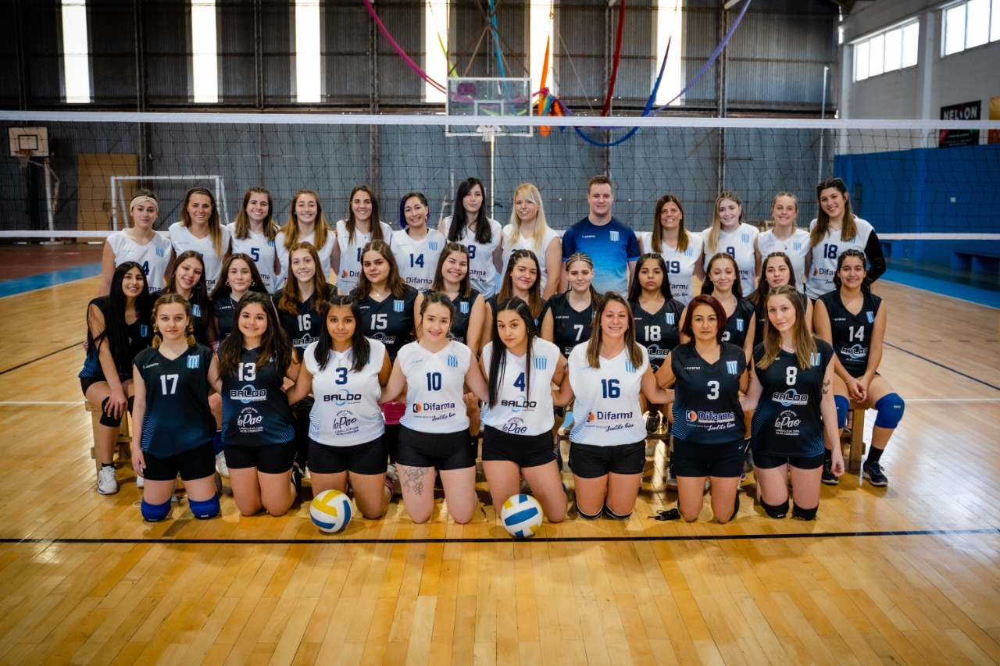
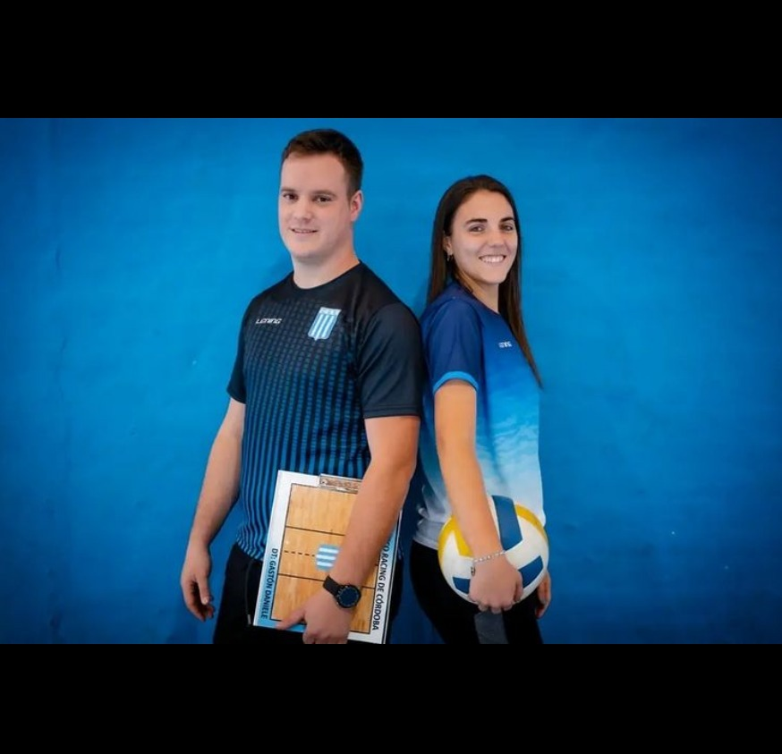

En el año 2017, Celeste Pairola incorporaba a los Deportes Amateurs de Club Atlético Racing de Córdoba la actividad Voley. Comenzó con grupos de menores y juveniles, hasta que, en el año 2018 el proyecto incluyó el grupo de adultos. Este 2021, Gastón Daniele se suma a C.A.R para dar inicio a un proyecto competitivo, con el desafío de llevar a la Academia a lo más alto de la F.C.V. Después de más de veinte años, vuelve el voley federado a Club Atlético Racing de Córdoba. LA ILUSIÓN NO SE PUEDE MEDIR.
Nuestros Profes
Ella es profe de Ed. Física, técnica provincial I de voleibol y jugadora de la divisional A2 femenina del club. Tiene a su cargo la iniciación deportiva de los más peques y lleva adelante la escuela de La Acade. Él, es profe de Ed. Física, técnico nacional de voleibol, árbitro provincial de voleibol y jugador de la divisional B1 masculina del club. Tiene a su cargo el perfeccionamiento y rendimiento deportivo y lleva adelante los grupos competitivos de La Acade.
Galería
Videos